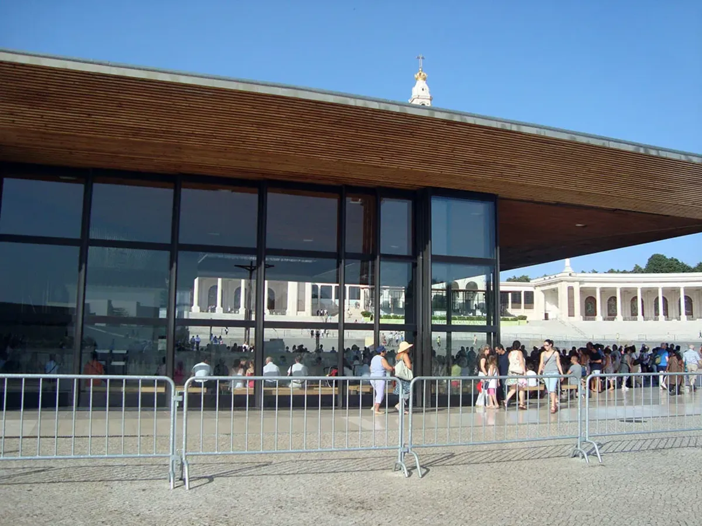
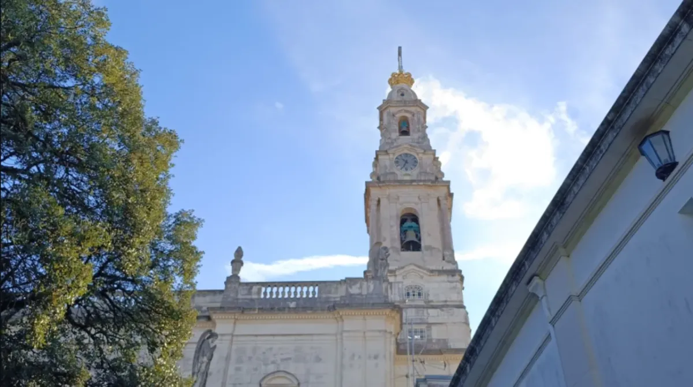

On October 13, 1917, at the Cova da Iria in Fatima, Portugal, the Virgin Mary appeared for the sixth and last time to Lúcia, Francisco and Jacinta, and called herself Our Lady of the Rosary. That same day, tens of thousands of people witnessed what is now known as the Miracle of the Sun. Today, every October 12 and 13, the Shrine of Fatima holds the last great international pilgrimage of the year.
Our 2027 Marian pilgrimage arrives in Fatima on October 13 itself. Here is what happened that day, how the Shrine celebrates it today, when the candlelight procession takes place and how we will spend our two days in Fatima as a group.
Fatima on our 2027 Marian pilgrimage
- Arrival in Fatima:
- October 13, 2027, after a panoramic tour of Lisbon.
- Nights in Fatima:
- two, October 13 and 14.
- What we will do:
- a first visit to the Chapel of the Apparitions, the chance to join the Rosary and candlelight procession, Holy Mass, the basilicas of the Rosary and of the Most Holy Trinity, and the Way of the Cross at Valinhos to Aljustrel.
- Full pilgrimage:
- October 12–23, 2027 (12 days / 11 nights) through Fatima, Salamanca, Covadonga, Garabandal, Lourdes, Zaragoza and Ávila.
- Spiritual director:
- Fr. Juan Carlos Álvarez Pérez, with daily Mass.
- Departures:
- from any city in the United States or anywhere in the world. We help you coordinate flights and connections to join the group.
- Price:
- from USD 4,649 departing from the United States, flight included. Price valid until December 30, 2026.
What happened at Fatima on October 13, 1917?
The Fatima apparitions began on May 13, 1917. Our Lady asked the three shepherd children to return to the Cova da Iria on the 13th of each month, and they did until October, with one exception: in August the children were being held by the local administrator, and the apparition took place a few days later, on the 19th, at Valinhos.
On October 13, a huge crowd gathered in the rain at the Cova da Iria. According to Lúcia's account, Our Lady said she was the Lady of the Rosary, asked for a chapel to be built there in her honor and for people to keep praying the Rosary every day. She also asked that people stop offending God.
Afterward, many of those present — believers and non-believers, including reporters from the Portuguese press — described the sun appearing to spin, change color and plunge toward the earth, and their rain-soaked clothes drying. That phenomenon, known as the Miracle of the Sun, is the best-remembered event of Fatima.
In 1930, the Bishop of Leiria declared the apparitions worthy of belief and authorized devotion to Our Lady of Fatima. Francisco and Jacinta Marto were canonized in 2017, and the cause for the beatification of Lúcia, who died in 2005, is ongoing. The year 2027 marks 110 years since the apparitions.
What is celebrated at Fatima on October 12 and 13?
From May to October, on the 12th and 13th of each month, the Shrine holds an International Anniversary Pilgrimage in memory of the apparitions. The October pilgrimage is the last of the year and draws pilgrims from many countries. Its program usually looks like this:
- Evening of October 12: the Rosary in several languages, the candlelight procession and a vigil with Eucharistic adoration.
- Morning of October 13: the Rosary, the international Mass, the blessing of the sick and the Farewell Procession, when the statue of Our Lady returns to the Chapel of the Apparitions.
The detailed program and times are published each year on the Shrine's official website.
The Fatima candlelight procession: when it is and what it is like
The candlelight procession is the best-known moment of the evenings at Fatima. It begins after the 9:30 p.m. Rosary at the Chapel of the Apparitions: every pilgrim holds a lit candle, and the Prayer Area fills with light as the statue of Our Lady moves through the crowd amid prayers and hymns.
Since February 2025 it has been held every day of the year, weather permitting. On the summer schedule, a Eucharistic procession takes its place on Thursdays at the same time. Before you travel, check the day's schedule on the Shrine's website.

What to see in Fatima: the places of the apparitions
- Chapel of the Apparitions (Capelinha): stands on the site of the apparitions. The first chapel was built in 1919, in answer to Our Lady's request on October 13.
- Basilica of Our Lady of the Rosary: overlooks the esplanade and holds the tombs of the three visionaries, Lúcia, Francisco and Jacinta.
- Basilica of the Most Holy Trinity: across the Prayer Area, consecrated in 2007 to welcome the great pilgrimages.
- Valinhos and Loca do Cabeço: the Way of the Cross at Valinhos leads to the site of the August apparition and to the Loca do Cabeço, where the children saw the Angel of Peace in 1916.
- Aljustrel: the hamlet where the shepherd children lived, with the homes of Lúcia and of Francisco and Jacinta.
How we will spend October 13, 2027 as a group
We depart on October 12 from our home cities and arrive in Lisbon on the 13th. After a panoramic tour of the city, with a few stops, we continue to Fatima.
That same October 13, the anniversary of the last apparition, we will make our first visit to the Chapel of the Apparitions and have time for personal prayer. In the evening we can join the Rosary and the candlelight procession.
One detail worth knowing: the anniversary's international Mass is celebrated on the morning of the 13th, before we arrive. We will live the day from the afternoon on, with our first visit to the Chapel and the evening procession.
On October 14 we will celebrate Holy Mass, visit the basilicas of the Rosary and of the Most Holy Trinity, and walk the Way of the Cross at Valinhos to the shepherd children's homes in Aljustrel. The afternoon is free for prayer, confession or Mass, and there will be a procession in the evening. On October 15 we continue to Salamanca.
Our guide to the Marian pilgrimage through Fatima, Lourdes and Spain describes the rest of the route through Covadonga, Garabandal, Lourdes, the Pillar and Ávila.

Tips for your October trip to Fatima
- Weather: in October, Fatima usually has mild days and cool nights, with a chance of rain. Bring a light jacket and a raincoat or umbrella for the evening procession.
- Comfortable shoes: the Prayer Area is very large, and the Way of the Cross at Valinhos is a dirt and stone path.
- Spiritual preparation: pray the Rosary in the weeks before and reread the message of Fatima: prayer, conversion, reparation and consecration to the Immaculate Heart of Mary.
- Intentions: bring a written list of your family's intentions and those entrusted to you.
Arrive in Fatima with us on October 13, 2027. From October 12 to 23 we will make a pilgrimage to Fatima, Lourdes and the Marian shrines of Spain, with Fr. Juan Carlos Álvarez Pérez and daily Mass. You can join from any city in the United States or from anywhere in the world. Message us on WhatsApp and we will send you the itinerary.
💬 Message us on WhatsApp View the 2027 Marian pilgrimageSources: Shrine of Fatima: the last major pilgrimage of the year (October 12–13); Shrine of Fatima: the candlelight procession becomes daily (2025, in Portuguese); Shrine of Fatima: 2026 summer schedule (in Portuguese).